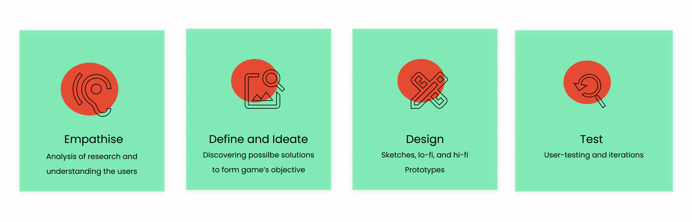

OVERVIEW AND THE GOAL:
GOAL:
Concept Description: A game for a minimum of 2 to 4 players called ‘Real Fake Gaming News’. It has three levels of rounds- easy, medium, and hard. He or she uses fake coins to determine if the news on each news card is real or fake. Loses coins on the incorrect answer and retains them if the answer is correct.
A player accesses the companion website where he sees news cards with: a headline, a short story or description, and the source.
Theme:
I went on to design a game based on ‘Fake News’ theme.
Genre of Game
Journalism
Type of Game
Quiz and strategy
MY ROLE IN THE TEAM:
This project was managed individually. So, I played a role of UX researcher, designer, and coder.
This time I chose a Non-Linear Design process. It was a valuable experience for me while I was designing, iterating, testing, and coding.
I always believed in backing concept development, prototype designing with research. Used the research papers from Medietilsynet to know the user-personas.
This research-paper says that the Norwegian teenagers prefer to play games in English to learn the language. They want to socialise and like to have a learning experience. In their daily lives, they are troubled by fake news. So, often look for sources where they can differentiate between real and fake news and keep themselves informed.
Here are the points I added in the game from the research-paper:

In this phase, I underwent a brainstorming session to define the possible solutions of the game.
Many sketches and ideations on miro-board and as simple as on pen and paper went into the defining of the game.


I learnt to use UX Pyramid model while iterating throughout the process. The video-game designers often use this model while incorporating interactive elements at every step of the game. This approach became useful while I was trying to bring out the meaningfulness.

What I learnt with user-testing:
Iterations and Learnings:
Enjoy Gaming Here!
Check out the github code here!
View Next Project: Åpenhet: Data Visualisation and Project Management
Have a project in mind? Shoot me a message at daisykmr2@gmail.com
Let’s design something great today!